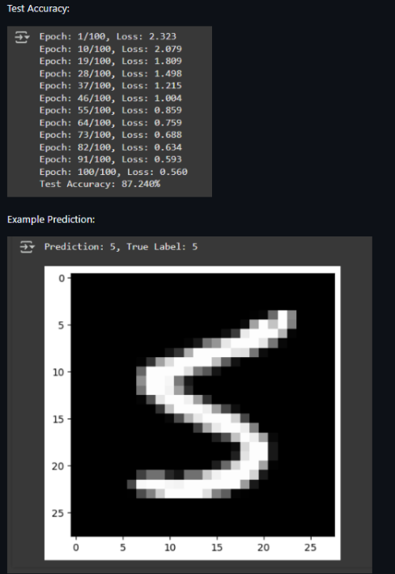
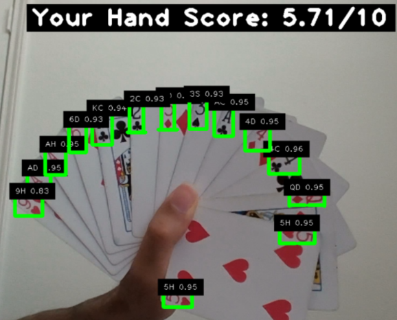
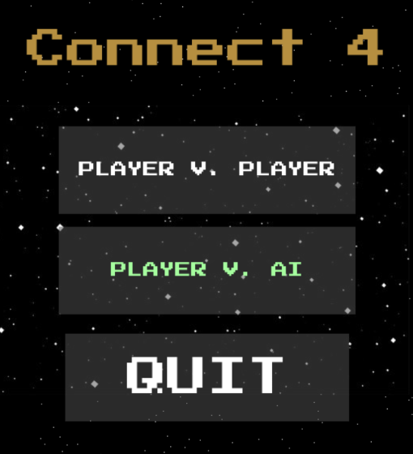
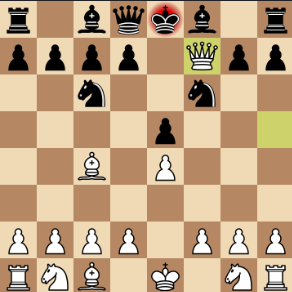
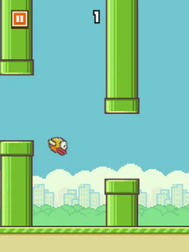

Projects and Skills
MNIST Digit Classifier
* Developed a handwritten digit classification system using the MNIST data set , achieving an accuracy of 87.2%.
* Implemented a neural network from scratch in Python and NumPy, utilizing the ReLU and softmax activation functions, backpropagation, and gradient descent for weight optimization.
* Enhanced the model's performance through hyperparameter tuning and implemented He weight initialization for improved convergence and training efficiency.
Spades Hand Scorer and Detector
* Utilizes Python and a pre-trained YOLOv4 model fine-tuned on a custom dataset of playing cards to detect the rank (e.g., Ace, 2, King) and suit (e.g., Spades, Hearts, Clubs, Diamonds) of cards.
* The rating for a hand is based on the card game 'Spades' and is calculated based on factors like card combinations, suit distribution, and rank patterns. Higher ratings are given to stronger hands such as 'Spades' flushes or high-ranked cards, with calculations considering both individual card strength and overall hand synergy.
* The model achieves an average accuracy of 93% in detecting card ranks and suits, with a low processing time for the rating.
Connect 4 With AI Opponent
* Developed a Connect 4 game in Python using Pygame, featuring both Player vs. Player and Player vs. AI modes with an interactive graphical user interface.
* Implemented an AI opponent using the Minimax algorithm with alpha-beta pruning to evaluate and select optimal moves.
* Designed and optimized board evaluation functions to score potential moves, enhancing the AI's decision-making process based on heuristic evaluation of the game state.
Chess
* Developed a fully functional Chess game in Python using Pygame, incorporating drag-and-drop functionality for piece movement and enhanced user interaction.
* Integrated external chess art assets to create a better visual experience, ensuring a polished and visually appealing gameplay environment.
* Implemented chess algorithms to simulate game rules, piece movement, and logic, allowing for a higher level of player-controlled scenarios.
Flappy Bird
* Created a fully functional Flappy Bird clone using Unity and C#, incorporating smooth animations and intuitive controls.
* Implemented game mechanics such as collision detection, score tracking, and procedural level generation.
* Designed and integrated custom assets, including sprites and sound effects, to enhance the overall user interface and feel of the game.
Through my projects, I showcase a variety of endeavors that highlight my skills in artificial intelligence, game development, and machine learning. Each project reflects my approach to problem-solving, whether it's building neural networks or integrating AI into games like Connect 4. As I continue to explore new technologies, I remain focused on creating innovative solutions that merge practical applications with engaging user experiences.
Beyond that, I also delve into various research articles on machine learning and find this one to be quite fascinating.